Animator
VCollab Pro users can create animations to show component or design functions like assembly, disassembly, etc using the Animator tool.
The Animator tool needs a separate license file to get activated.
Steps to open animator window
- Load any model in VCollab Pro
- Click Tools | Animator to open the Animator player and toolbar
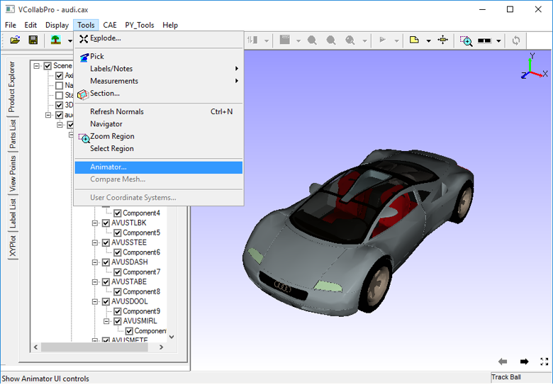
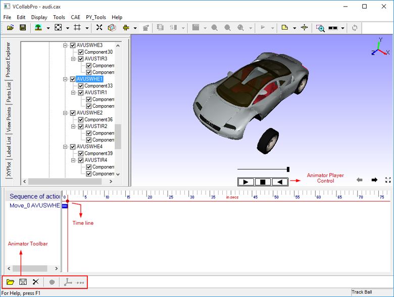
Steps to hide Animator Player control display
- Right click inside the viewer window to open the context menu.
- Click Animator Player to hide or show.
Animator Toolbar
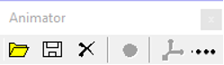
Animator tools:
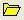 - Open animator file.
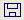 - Save Animator File
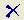 - Clear the sequence
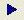 - Play the sequence
- Stop the sequence
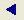 - Reverse play sequence
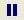 - Pause the sequence
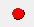 - Capture action from pick and move
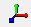 - Show axis for pick and move part
- Open authoring action dialog (authoring through GUI)
Animator viewer window

Author Action Dialog
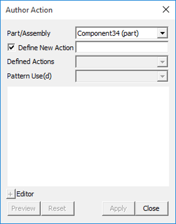
The various fields and controls available in the Author Action dialog box are explained below.
| Part/Assembly | Name of a part/assembly selected. |
| Define New Action | New action name (unique name). |
| Defined Actions | List of actions defined for selected part/assembly. |
| Pattern Use(d) | Pattern used for this particular action. |
| Editor Window | Edit basic action (translation and rotation) parameters to author a new action. |
| Preview | Preview the new or defined action. |
| Reset | Reset to default values of current action. |
| Apply | Assign the action to part/assembly selected. |
| Close | Close the dialog. |
Author Action
Authoring an action can be done in several ways:
- Through pick and move
- Not using axis control
- Using axis control
- Through GUI.
Steps for authoring an action through pick and move, not using axis control
Pick a part or an assembly by clicking in the viewer window or from the product explorer.
Pan, rotate, or zoom using the left, right, or middle mouse button.
Click Capture to capture action.
Follow steps from 1 to 3 to continue capturing other actions.
The below image shows authoring action without using axis control.
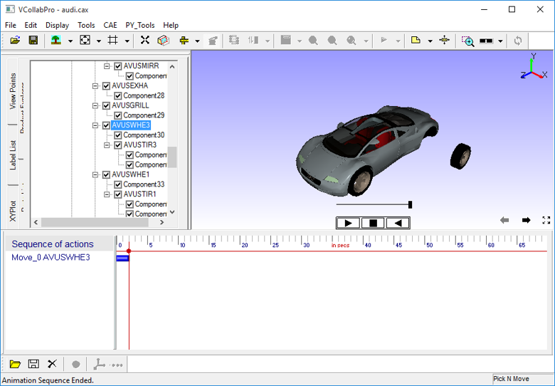
Steps for authoring an action through pick and move, using axis control
- Pick a part or an assembly by clicking in the viewer window or from the product explorer.
- Click to enable the axis at the picked part/assembly.
- Move the mouse over the axis to highlight the axis.
- Rotate or move parts by holding the left or right mouse button.
- Offset axis using the middle mouse button.
- Follow steps from 1 to 5 to continue capturing other actions.
The below image shows authoring action using axis control.
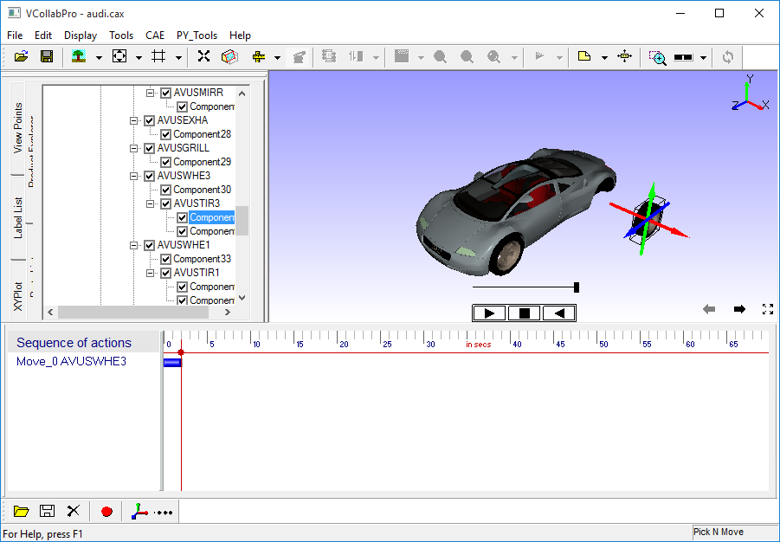The below image shows authoring through Pick and Move, using axis (selected axis is highlighted)
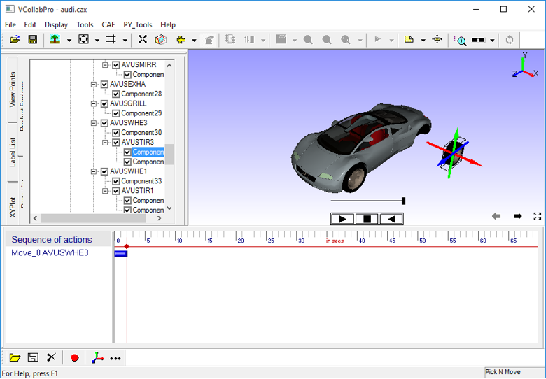Steps for authoring an action through GUI
- Pick a part or an assembly by clicking in the viewer window or from the product explorer.
- Click Show authoring action
- Give a name to record new action
- Select an action from the Pattern Use(d) drop down list.
- Edit basic action axis and its value.
- Preview the action using the Preview button.
- Apply the action to a selected part/assembly.
The below image shows authoring through GUI
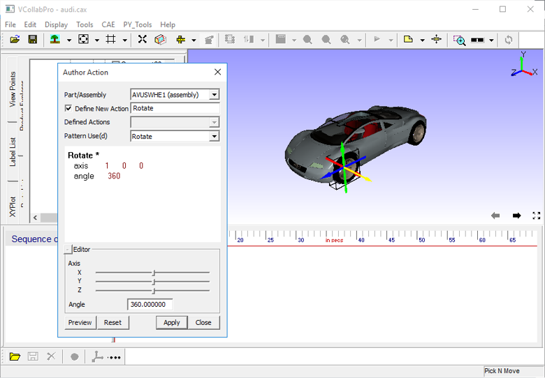
Steps to do sequencing
All authored actions are added to a sequence. Users can change the order or change the time of action using the sequence viewer graphically.
The image below shows a sequence with 2 actions, Move and Rotate part AVUSWHE1.
The image below shows a Sequence in which order of actions are changed.
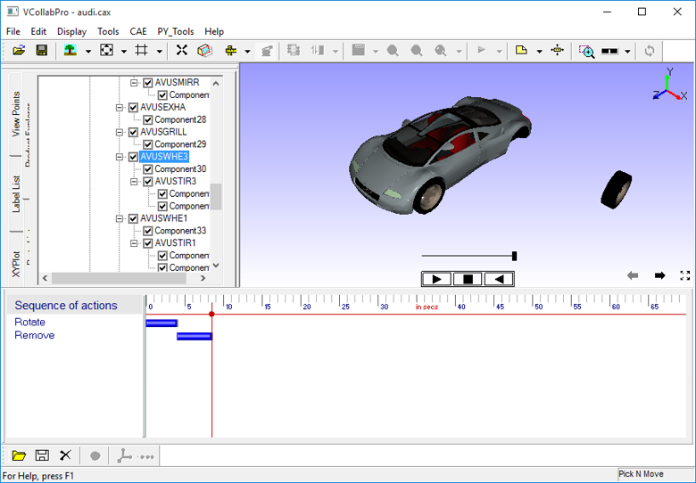
The image below shows a Sequence in which duration of actions are changed.
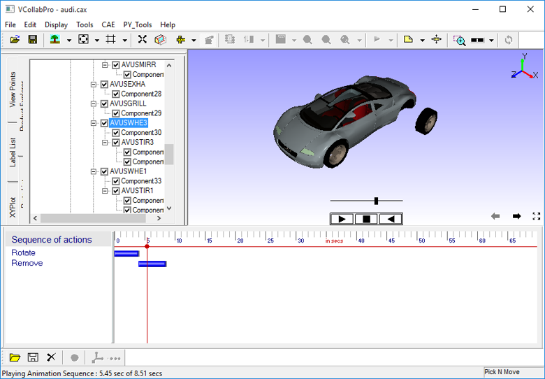
Steps to control a Sequence
After creating the sequence, users can do several operations using Player Control

- play
- reverse play
- pause and
- stop
Reverse play enables the user to play animation in reverse without authoring that animation.
For example, if user authors disassembly, then he can animate assembly by reverse play.
Steps to save and retrieve a sequence
Once a sequence is ready click Save
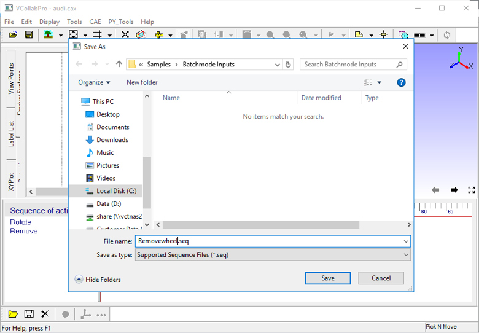
Enter a filename with extension .seq and click Save.
Click Open to retrieve or load a sequence.
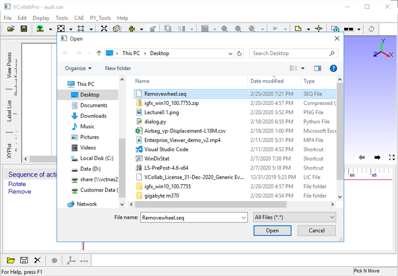
Select a file with extension .seq and click Open